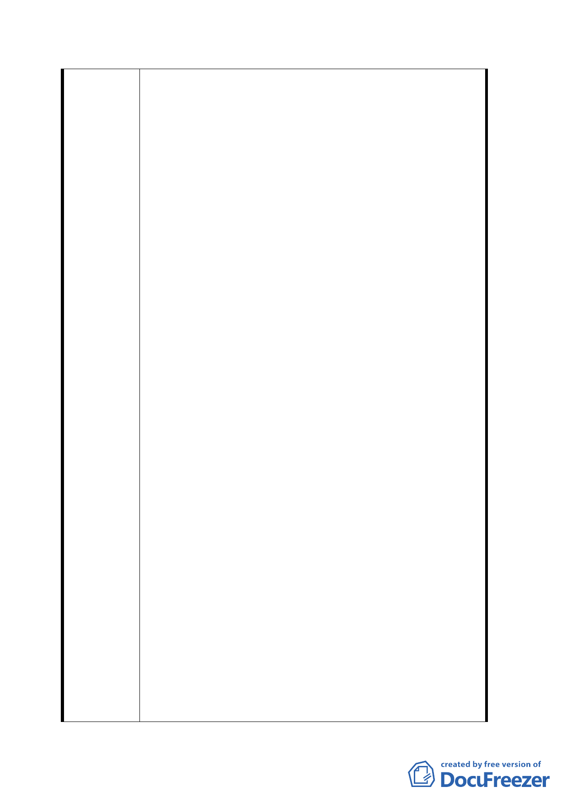

人」、「土地選用原則」、「土地公告現值」等項目進
行評估後得知，均以「現松山農會用地」為優先選
項及較適標的。
（二）鄰近地區其他用地選擇：1、「台汽」所有地（八德
路四段 638 號，地號 716、721）。2、「台電」停車用
地（八德路四段 608 號，地號 749）。3、「台電」營
業用地（八德路四段 598 號，地號 767、768）。4、
塔悠路八德路口路面寬大空地。
九、九十三年三月十日市都委會第五二五次會議中，陳情
人所邀請捷運工程、設計專家所提評析及建議如下：
（一）闕博士河淵先生：
１、捷運規劃一向都是以公有土地做為優先考量，就此位
置即有國產局、農會及祭祀公業、台汽、台電、八德立體
停車場旁低度使用路面等公有土地皆宜善加取得。
２、通風井有三項功能，其一為減壓井，另外兩個是車站
站體本身需要的進氣、排氣。其中最嚴重的是減壓井的部
分，因隧道內空氣有相當程度之污染，對鄰近地區有很嚴
重的影響，尤其旁邊皆有住家緊鄰，實在不宜。
３、就整體市容景觀而言，在三十米道路的完整街面上，
在松山市場旁隔二棟民宅挖出一塊來做通風井，接著又是
一般的商店，對整個市容景觀有相當程度的衝擊，而且沒
有辦法做一個整體的後續規劃。
４、松山線 G22 車站東西兩邊都有月台門，其減壓井最好
的設置位置應該是在路線的中段而非車站的兩端，它的效
益才會是比較高的。即如在路段中間找一個公有的土地來
設置減壓井，其他進出氣的部分利用對面國產局、農會、
祭祀公業的公法人土地及公有土地來加以設置，可以讓氣
流有相當程度的流通。
５、目前出入口配置在車站東側其南、北兩側都有出入口，
在車站西側卻只有北側有出入口，就捷運車站規劃上一個
很重要的原則，就是在緊急情況時必須要能夠順利的疏散
人潮，像這樣不均衡的設置對人潮疏散是非常不利的。如
果在南側無法設置出入口，起碼要能夠設置緊急出入口，
其配置正好可設於現松山農會用地，配合進、排氣做整體
規劃，應該優於目前預定的交一用地，因小小的交一用地
做通風口後就完全沒有其他彈性了。
（二）蔡水旺先生：
１、在此特別強調設置通風口的位置應妥善考量。因通風
三六